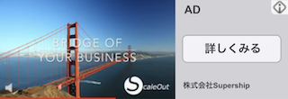

ポストCookie時代の到来に備え、SupershipとOracleが描くこれからのコンテクスチュアルターゲティングの未来とは？
独自データを活用した高精度なターゲティング配信や媒体開示型の詳細なレポーティング機能によって、より効果的、効率的な広告運用を多様な広告フォーマットにて可能にする、Supershipの広告主様向けアドプラットフォーム「ScaleOut DSP」。2021年4月より、AIを活用した独自の広告テクノロジーを提供する日本オラクル株式会社（以下、オラクル）の広告ソリューション「Oracle Advertising」との連携を開始しました。
プレスリリースはこちら：
Supershipの「ScaleOut DSP」が「Oracle Advertising」と連携〜ポストCookie時代を見越したコンテクスチュアルターゲティング広告配信と、Moat by Oracleのグローバル指標によるアドベリフィケーション機能を実現〜
今回は、両社が連携に至った背景や今後について、日本のアドプラットフォームやブランドに「Oracle Advertising」の導入を支援するオラクルの西川氏と、Supershipで「ScaleOut DSP」のセールスチームリーダーとしてデジタルマーケティングのプランニングをリードするSupershipの樋口に、インタビューを実施いたしました。
■日本オラクル株式会社 パートナーデベロップメント 西川明里
CCIでメディアプランニングからセールス、メニュー開発などに携わり、その後2年間ほど留学。帰国後はCriteoでパブリッシャーリクルーティングやマネタイズを担当し、2017年にOracle Data Cloud（現Oracle Advertising）の日本立ち上げメンバーとしてオラクルに入社。2017年にオラクルがMoatを買収してからはMoatとオーディエンス、2018年にコンテクスチュアル解析・ターゲティング企業のGrapeshot (現Oracle Contextual Intelligence)を買収してからはオーディエンス、Moat、コンテクスチュアルの3領域でパートナーマネージメントを担当。
■Supership株式会社 デマンドプラットフォーム推進部 セールス1G GL 樋口 隆文
ユナイテッドにてモバイル広告営業を経て、ミレニアルメディアの日本支社立ち上げメンバーとして、パブリッシャーリクルーティングを担当。
その後、アマゾンジャパンにてアカウントマネージャーとしてプランニングと広告運用を担当したのち、現職。
フェードアウトのデモ ↓をクリック
0.5秒で設定

フェードアウト